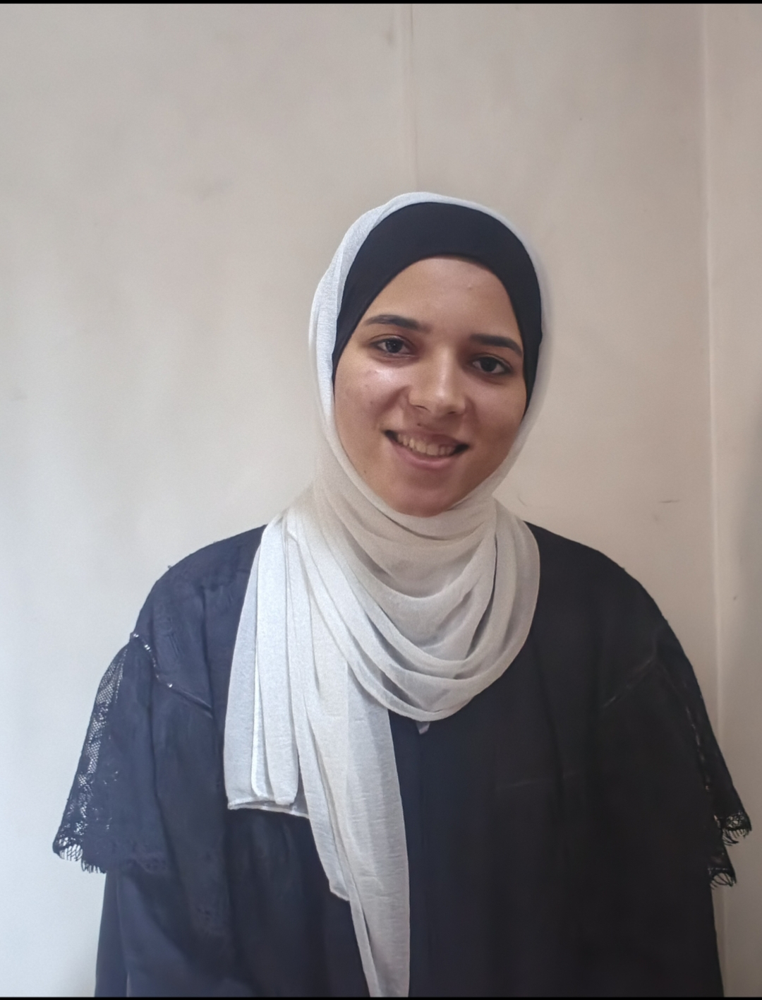

طالبة نظم معلومات إدارية وتجارية معاصرة
جامعة الأقصى - غزة

أسعى إلى تطوير مهاراتي في مجال تكنولوجيا المعلومات وتصميم وإدارة المواقع الإلكترونية، واكتساب خبرات عملية تساعدني على بناء مستقبل مهني ناجح، وتوظيف المعرفة التقنية والإدارية في تطوير المشاريع الصغيرة والمساهمة في الابتكار وريادة الأعمال.
أنا رنا، طالبة في جامعة الأقصى، تخصص نظم معلومات إدارية وتجارية معاصرة. أهتم بمجالات تكنولوجيا المعلومات والتصميم الجرافيكي وتصميم المواقع الإلكترونية وإدارة المشاريع الصغيرة.
أمتلك شغفاً بالتعلم والتطوير المستمر، وأسعى إلى الجمع بين المهارات الإدارية والتقنية والإبداعية. كما أهتم بتحويل الأفكار إلى مشاريع عملية قابلة للتنفيذ، واكتساب خبرات تساعدني على تحقيق أهدافي المهنية والمساهمة في خدمة المجتمع.
| السنة | المؤسسة التعليمية | المؤهل العلمي |
|---|---|---|
| 2026 | جامعة الأقصى - غزة | طالبة بكالوريوس نظم معلومات إدارية وتجارية معاصرة |
| 2026 | جامعة الأقصى - غزة | طالبة بكالوريوس نظم معلومات إدارية وتجارية معاصرة | التعليم الثانوي | الثانوية العامة |
| السنة | المؤسسة التعليمية | المؤهل العلمي |
|---|---|---|
| 2026 | جامعة الأقصى | طالبة نظم معلومات إدارية وتجارية معاصرة |
| قبل الجامعة | التعليم الثانوي | الثانوية العامة |
العمل على تطوير فكرة مشروع ريادي صغير في مجال إعادة استخدام البلاستيك والكرتون، وتصميم منتجات يدوية مبتكرة وصديقة للبيئة، مع الاهتمام بالتخطيط والإدارة والتسويق وتطوير المنتجات.
المشاركة في إعداد المشاريع والتكليفات الجامعية المتعلقة بنظم المعلومات وإدارة الأعمال والتكنولوجيا، وتطبيق المعارف النظرية في أنشطة ومهام عملية.
تنفيذ تصاميم جرافيكية باستخدام برنامج Photoshop، وتطوير المهارات الإبداعية في إعداد التصاميم والعناصر البصرية.
العمل على تعلم أساسيات البرمجة وتصميم صفحات الويب باستخدام HTML، وتطوير المعرفة بالتقنيات الحديثة وتطبيقاتها في مجال الأعمال.
الاسم: رنا عمر علي عبد العزيز أبو فول
البريد الإلكتروني: اكتبي بريدك الإلكتروني هنا
رقم الهاتف: 0599695216
اكتبي رقم هاتفك هناGitHub: زيارة حسابي على GitHub
أضيفي رابط حسابك هنا